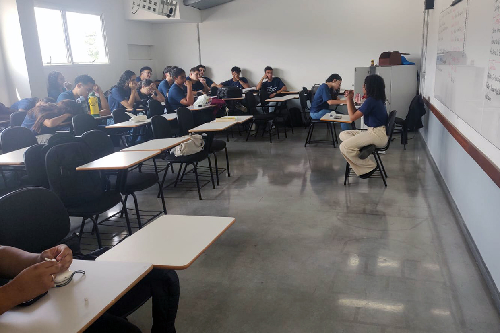
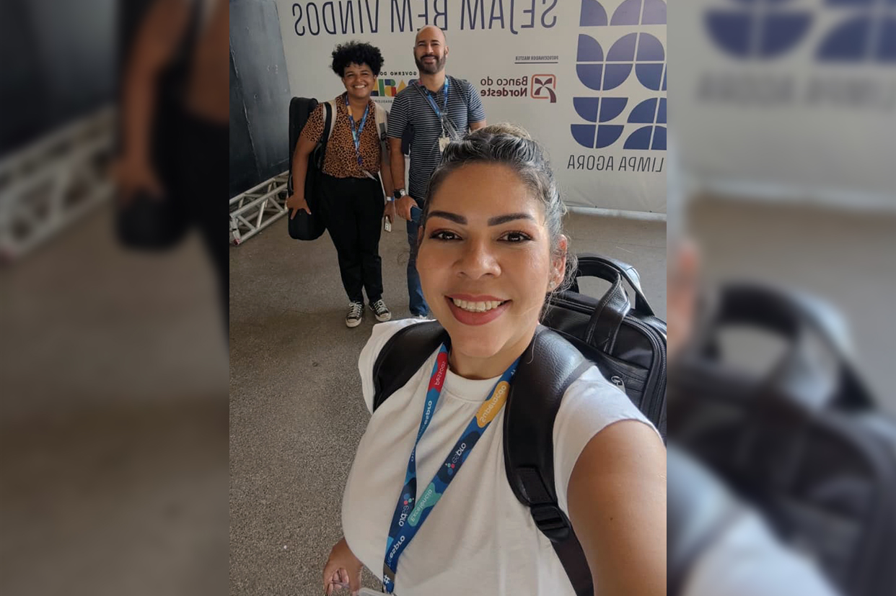
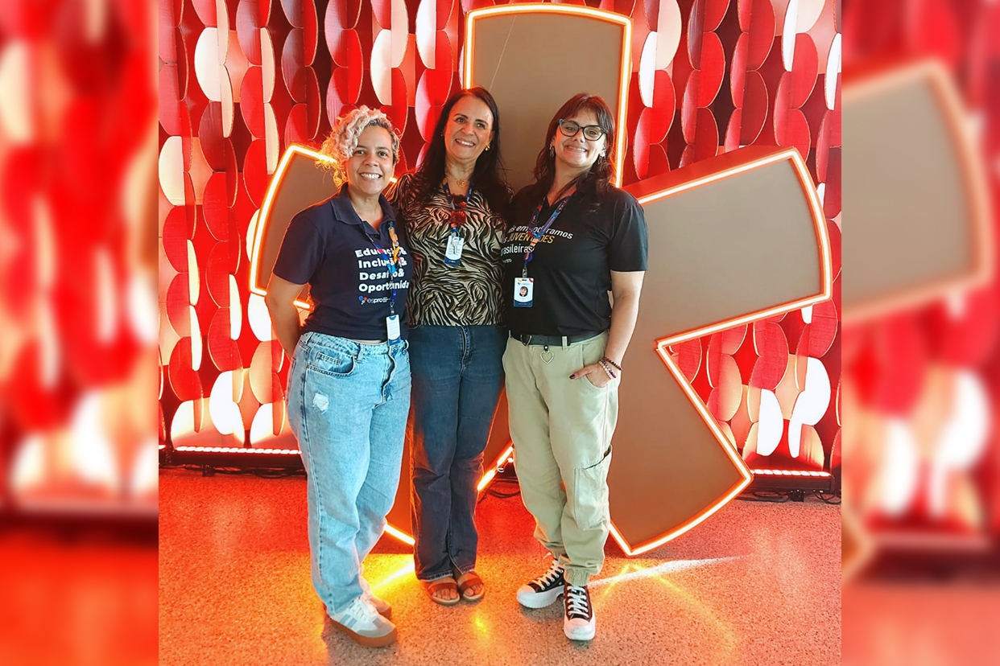
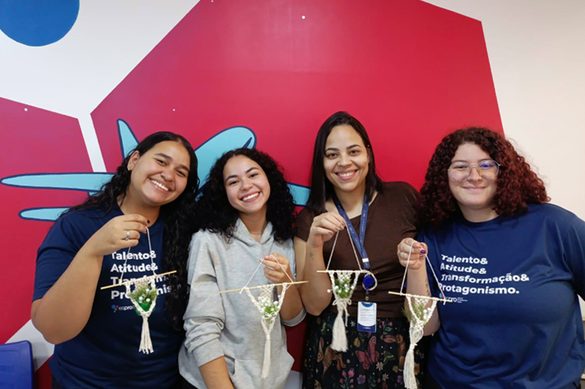

As turmas 15372 e 15542, da unidade de Contagem (MG), participaram de uma dinâmica inspirada na metodologia Roda Viva, conduzida pela instrutora Jullieth de Oliveira. A atividade promoveu um espaço de diálogo e reflexão, no qual os jovens assumiram o papel de entrevistadores e entrevistados, explorando temas como carreira, ética, autoconhecimento e projetos de vida.
Com a participação de mais de 60 jovens, a experiência estimulou habilidades como escuta ativa, argumentação, empatia e respeito às diferentes perspectivas. O envolvimento dos participantes e a qualidade das discussões demonstraram o impacto da atividade no desenvolvimento socioemocional dos jovens, fortalecendo o protagonismo e a construção de uma visão mais consciente sobre o futuro profissional
Confira os registros da participação dos jovens na atividadeDurante o mês de maio, a unidade de Goiânia (GO) realizou uma série de ações voltadas ao desenvolvimento integral dos jovens, com destaque para a campanha Maio Laranja, dedicada à conscientização e ao combate ao abuso e à exploração sexual de crianças e adolescentes. As atividades contaram com a participação de profissionais do Centro de Referência Especializado de Assistência Social de Goiás (CREAS-GO), do Conselho Tutelar de Goiânia e da Guarda Civil de Goiânia, promovendo palestras, rodas de conversa e momentos de reflexão que reforçaram a importância da informação, da prevenção e das redes de apoio. Além das ações de conscientização, os jovens participaram de iniciativas voltadas ao protagonismo, à integração e ao desenvolvimento de competências profissionais. Entre os destaques estão mais uma edição do Conecta Espro, espaço de compartilhamento de aprendizados e experiências, e atividades do programa Gestores do Futuro, que abordaram temas como branding, marketing digital, trabalho em equipe, criatividade e comunicação. As ações fortaleceram o engajamento dos participantes e ampliaram suas perspectivas sobre cidadania, carreira e construção de projetos de vida.
Acesse os registros das atividades realizadas no poloComo atividade de encerramento da turma 14078, a instrutora Leila da Silva convidou a jovem Maria Luiza Santiago Villar a registrar, por meio de um relato, sua trajetória e os principais aprendizados construídos durante sua participação no Espro. Intitulado “O Espro transforma”, o texto apresenta reflexões sobre desenvolvimento pessoal, oportunidades e o impacto da experiência em sua formação.
A iniciativa proporcionou um momento de valorização da trajetória da jovem e de reconhecimento das conquistas alcançadas ao longo do programa. O relato evidencia como a aprendizagem, o acompanhamento e as vivências proporcionadas pelo Espro contribuem para a construção de projetos de vida e perspectivas para o futuro.
Leia na íntegra o texto produzido pela jovemA turma 16861, conduzida pela instrutora Paloma Macedo, participou de uma atividade prática sobre Governança Social, com foco nos princípios de governança corporativa e nos pilares ESG. Por meio de uma dinâmica inspirada em um cenário de “Conselho de Administração em Crise”, os jovens assumiram o papel de tomadores de decisão, analisando desafios relacionados à ética, transparência, responsabilidade e sustentabilidade empresarial.
A atividade utilizou metodologias ativas, gamificação e um mural colaborativo para promover a aplicação dos conceitos em situações próximas à realidade organizacional. O alto engajamento da turma evidenciou o desenvolvimento de competências como pensamento crítico, argumentação e tomada de decisão, reforçando a importância de preparar os jovens para os desafios éticos e profissionais do mercado de trabalho.
Verifique os registros do encontroA turma 16175, da unidade de Belém (PA), participou de uma visita técnica ao Estádio Mangueirão, vivenciando uma experiência que integrou aprendizagem, cultura, empreendedorismo e desenvolvimento profissional. Durante a atividade, os jovens observaram a estrutura organizacional do estádio, identificando diferentes áreas de atuação, funções e processos que contribuem para o funcionamento de uma instituição de grande porte, além de refletirem sobre temas como acessibilidade, inclusão e gestão de eventos.
A experiência também inspirou os participantes da Empresa Júnior LUMI a enxergarem novas possibilidades de atuação profissional e empreendedora, relacionando os conhecimentos adquiridos a oportunidades de negócios e prestação de serviços. Ao mesmo tempo, a visita fortaleceu a valorização da cultura local e do patrimônio paraense, ampliando a compreensão dos jovens sobre o papel dos grandes equipamentos públicos na promoção do esporte, da cultura e da integração social.
Explore os registros e aprendizados compartilhados pela turmaAs turmas 14396 e 13539, da unidade de Belém (PA), protagonizaram a criação da Informa Jovem, empresa júnior idealizada pelos próprios jovens a partir da integração entre os grupos. A iniciativa surgiu de forma colaborativa e demonstrou maturidade, senso coletivo e criatividade, consolidando um espaço voltado à produção de conteúdo, análise crítica e desenvolvimento de competências ligadas à comunicação, inovação e impacto social.
Além da criação da empresa júnior, os jovens desenvolveram projetos como “O ESPRO que eu vejo” e a primeira edição do Informa Jovem, que estimularam expressão artística, produção de conteúdo e reflexão sobre temas relevantes para a juventude, como saúde mental, identidade, empreendedorismo e projeto de vida. As atividades reforçaram o protagonismo juvenil e evidenciaram o potencial criativo dos participantes na construção de iniciativas significativas para sua formação pessoal e profissional.
Acesse os materiais produzidos pelos jovensA turma 16207, conduzida pelo instrutor Lucas Batista, da unidade Belo Horizonte, desenvolveu o jornal “Aconteceu em Venda Nova”, uma iniciativa criada para divulgar trimestralmente as atividades, os projetos e as experiências vivenciadas pelos jovens na unidade. O projeto foi construído a partir da perspectiva dos próprios participantes, valorizando suas percepções, vivências e protagonismo na produção dos conteúdos.
A atividade fortaleceu o senso de pertencimento, a comunicação e a participação ativa dos jovens, incentivando-os a assumir um papel central na construção do próprio processo de aprendizagem. A excelente adesão da turma demonstrou o potencial da iniciativa como ferramenta de expressão, colaboração e valorização das experiências desenvolvidas na unidade.
Confira a apresentação produzida pelos jovens
Os jovens da Vyler, empresa júnior de marketing do programa Gestores do Futuro, participaram da Expo Renováveis 2026, vivenciando na prática a dinâmica de um grande evento corporativo. Durante a atividade, os participantes foram responsáveis pela produção de conteúdos, realizando registros fotográficos, gravações de vídeos e entrevistas com expositores e visitantes.
A experiência proporcionou o desenvolvimento de competências relacionadas à comunicação, marketing, produção de conteúdo e relacionamento profissional, além de ampliar o contato dos jovens com temas ligados à inovação e à sustentabilidade. A participação reforçou a proposta do programa de aproximar os jovens de desafios reais do mercado de trabalho.
Acompanhe os registros produzidos pela equipe
As turmas 15350, 16417 e 14839 participaram do 5º ESG Fórum Bahia, em Salvador, vivenciando uma experiência de aprendizado sobre temas que vêm transformando o mercado de trabalho, como sustentabilidade, responsabilidade social, governança corporativa e mercado de carbono. O evento proporcionou aos jovens contato com especialistas e debates atuais, ampliando a compreensão sobre os desafios e oportunidades relacionados à agenda ESG.
Além de acompanharem as palestras e discussões, os participantes se destacaram pelo engajamento e protagonismo durante o evento, chamando a atenção de veículos de comunicação locais. A experiência reforçou a importância de preparar os jovens para atuar em um cenário cada vez mais conectado à sustentabilidade e à inovação, fortalecendo o pensamento crítico e a construção de uma visão de futuro alinhada às demandas da sociedade e do mundo do trabalho.
Acompanhe os registros da participação das turmas no evento
Durante as atividades do projeto “O ESPRO que eu vejo”, conduzidas pela instrutora Dannielly Pereira, os jovens participaram de uma oficina de macramê, na qual aprenderam técnicas básicas de artesanato e desenvolveram suas primeiras produções. A experiência despertou grande interesse dos participantes, que deram continuidade ao aprendizado e exploraram novos pontos e técnicas, resultando na criação de chaveiros produzidos por eles mesmos.
Mais do que o desenvolvimento de habilidades manuais, a atividade proporcionou momentos de troca, colaboração e fortalecimento dos vínculos entre os jovens. A iniciativa incentivou a descoberta de talentos, a expressão da criatividade e a valorização do potencial individual, reforçando o papel do Espro como um espaço de aprendizagem, autoconhecimento e desenvolvimento humano.
Acesse os registros e produções dos jovensE aí, curtiu o novo formato e as informações do Minuto do Instrutor? Lembre-se de compartilhar com a gente o que tá rolando em sua unidade e dê sugestões de conteúdo!
Deixe um comentário aqui 👇🏼. Sua opinião é importante para nós!